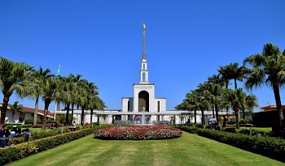
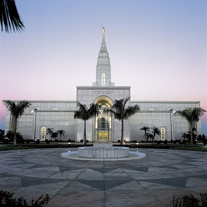
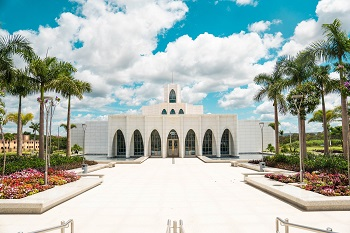
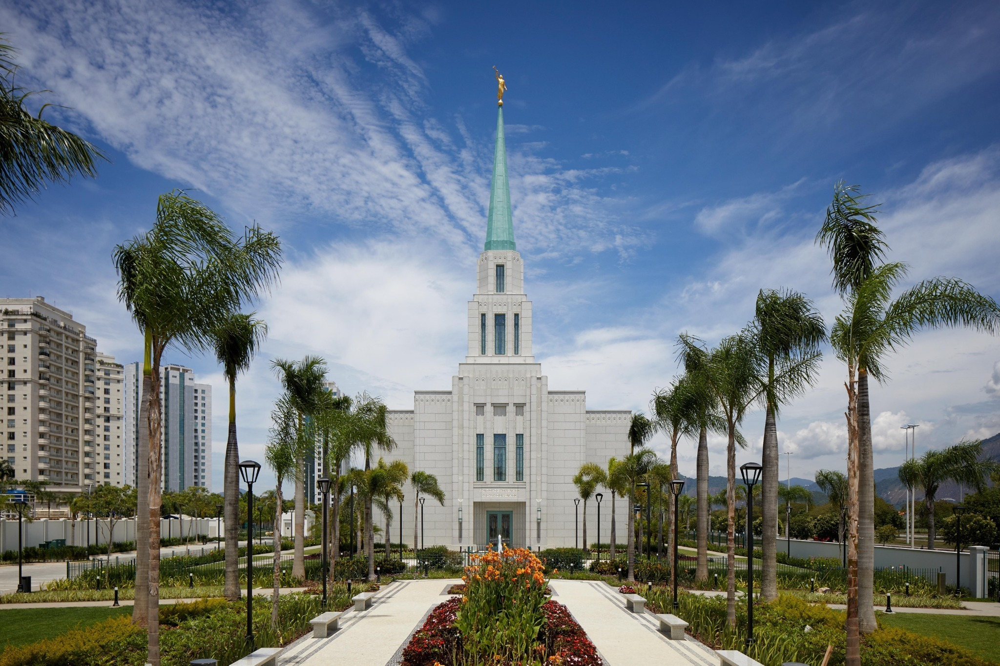
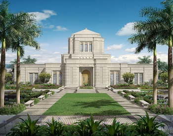
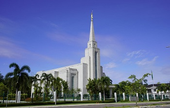
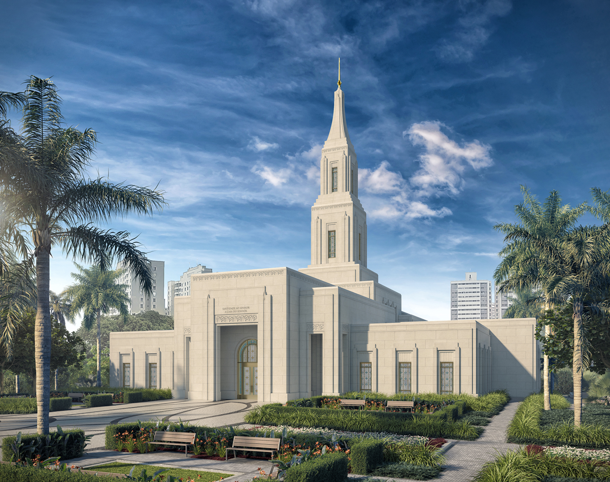

São Paulo, Brazil Temple

Campinas, Brazil Temple

Brasília, Brazil Temple

Rio de Janeiro, Brazil Temple

Belo Horizonte, Brazil TempleRibeirão Preto, Brazil TempleLondrina, Brazil Temple

Manaus, Brazil Temple

Natal, Brazil Temple